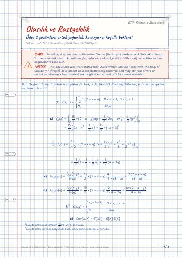

Olasılık ve Rastgelelik · Dijital ders notu
Ödev 2 çözümleri: ortak yoğunluk, kovaryans, koşullu beklenti
- Ders
- Olasılık ve Rastgelelik (ELM218)
- Dönem
- 4. Dönem · 2022–2023 Bahar
- Biçim
- PDF · 3 sayfa · 0,1 MB · el yazısı görünümlü LaTeX
- Orijinal not
- Olasilik-ve-Rastgelelik-Ders-12-29.05.pdf

Uyarı: Dijital notlar, el yazısı notlardan Claude (Anthropic) yardımıyla oluşturulmuştur; yardımcı kaynak olarak hazırlanmıştır ve hata içerebilir. Orijinal notları ve resmi ders kaynaklarını esas alın.
The digital notes were created from the handwritten notes with the help of Claude (Anthropic); they are meant as a supplementary resource and may contain errors. Always rely on the original notes and the official course materials.
The digital notes were created from the handwritten notes with the help of Claude (Anthropic); they are meant as a supplementary resource and may contain errors. Always rely on the original notes and the official course materials.